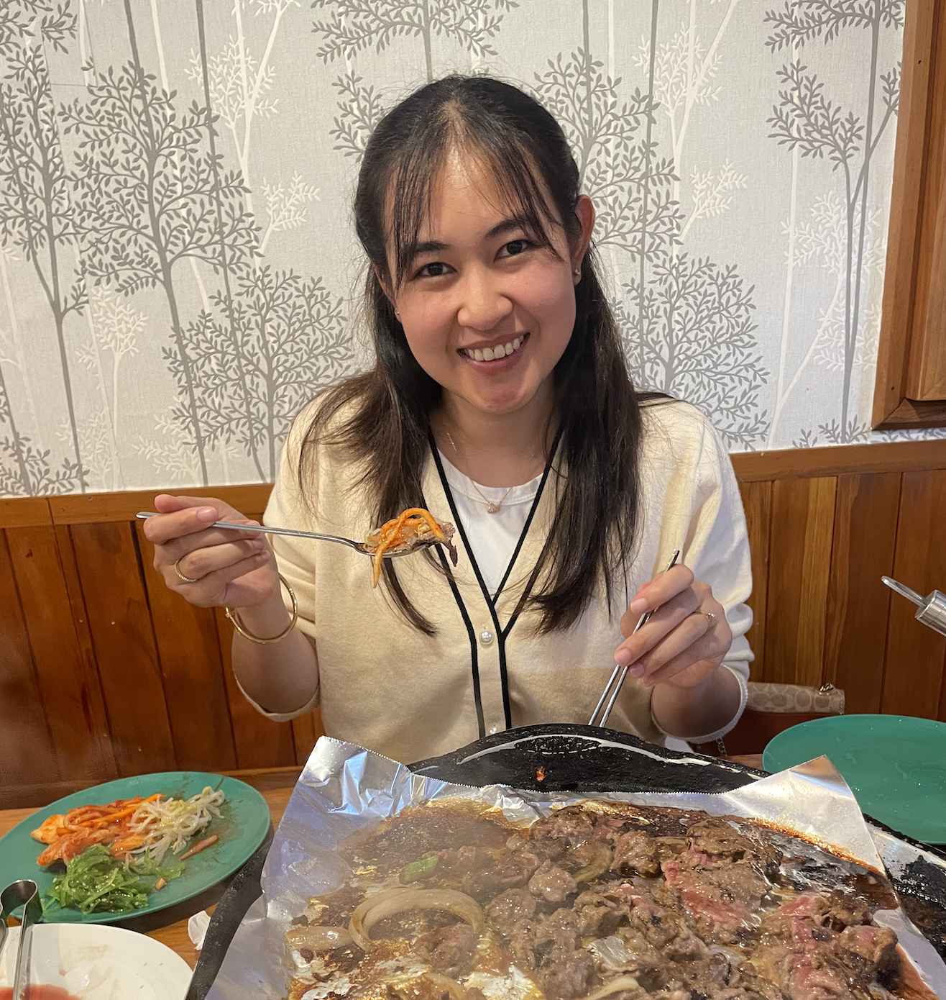
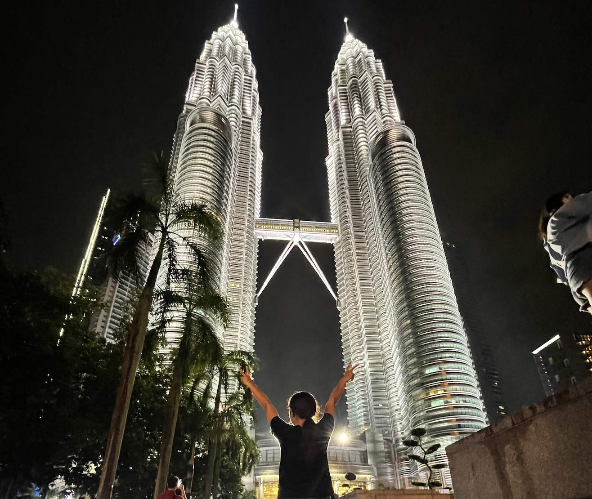

A little bit about me
Hello, My name is Oranee Kasem, a student learning Software
development.
A little bit about me — I was born in Thailand but moved to
Wellington, New Zealand about six years ago.
Growing up in Thailand taught me the importance of respect, growth,
and, most importantly, kindness.
I consider myself a hardworking person who is always looking to learn
new skills, gain knowledge,
and explore new opportunities to
create a better future for myself and my family.
I worked as a barista and café manager for three years, but I have
always wanted to pursue a new career
that offers more stability
and balance.
After completing my first Information Technology course with an A+
grade, I knew this was the path I wanted to.
Learning in this
field was not easy, especially as English is my second language,
but I'm proud of the progress I have made so far
During that course, I also learned a bit about making simple websites,
which sparked my interest even more.
Surprisingly, I did not like computer gaming before I got into I.T. —
instead, I have always been more passionate about food and travel.
After doing thorough research, I decided to join a Software
Development course.
I am highly motivated to learn as much as I can through this program,
and I truly hope it will be the beginning of an exciting new career
for me.
Thanks for visiting my blog!
 